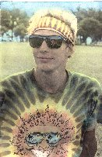

Michael "Mikey" Roman

Years Played: 1987-1991 & 1995-2001
Bio: I played hard for my team & worked hard to help HULA and the Kaimana Klassik grow. Played at Kaimana I & at Summer Solstice with the Lava Rockers in 88 & 90. Helped Co-run the city league in 91 with Debbie Rubin & wrote the HULA News in 92-93
Words of Lore:I look back fondly on when I watched new players learn to love the sport & its camaraderie. Always give a warm welcome to new players, encourage them whenever possible and go the extra yard to help them improve their game skills.
Most Memorable Achievement: 1997 Started a short lived beginner's league called Renaissance Ultimate (no cleats ultimate).
Most Noteable Achievement: 1995 began the HULA website and the HULA Hotline (back then many people did not have internet).
Currently: (as of 2005)
Location: Honolulu, HI
Work: IT Admin
Play: Disc Golf & Salsa Dancing